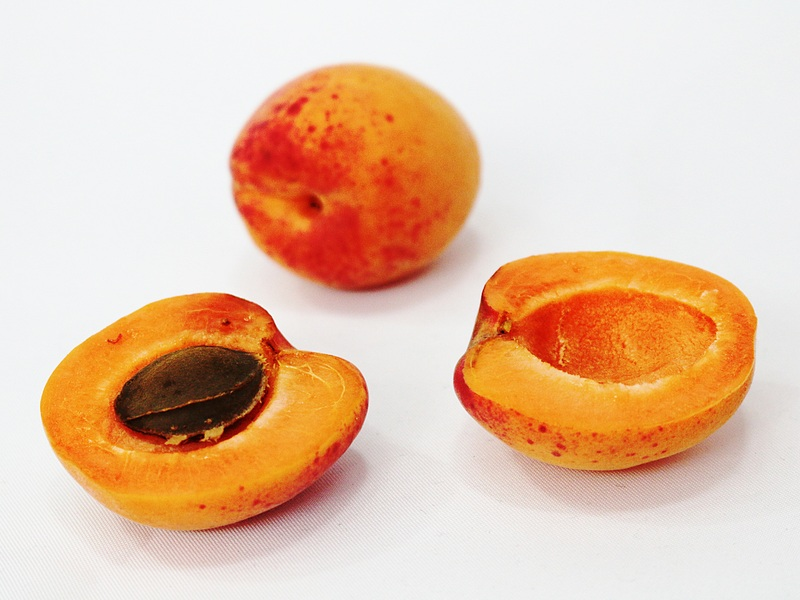

Тег <area>
Каждый элемент <area> определяет активные области изображения, которые являются ссылками. Рисунок с привязанными к нему активными областями называется в совокупности картой-изображением. Такая карта по внешнему виду ничем не отличается от обычного изображения, но при этом оно может быть разбито на невидимые зоны разной формы, где каждая из областей служит ссылкой. Тег <area> задает форму области, ее размеры, устанавливает адрес документа, на который следует сделать ссылку, а также имя окна или фрейма, куда браузер будет загружать документ. Этот тег всегда располагается в контейнере <map>, который связывает координаты областей с изображением.
